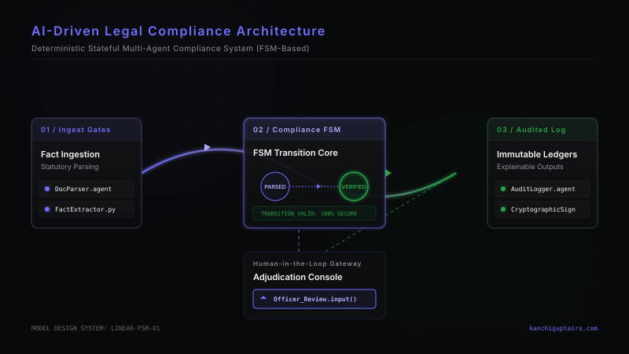

For decades, law and technology existed as two separate spheres of human intellect. Law was the domain of natural language, nuance, precedent, and human interpretation. Technology was the domain of deterministic logic, binaries, databases, and mathematical precision. Legal systems operated retrospectively—relying on human administrators and courts to resolve disputes and audit compliance long after actions were taken. Technological systems operated prospectively—running computations and processing data in real time, but with little innate understanding of the legal frameworks governing their actions.
Today, this historical divide is rapidly collapsing. The emergence of agentic workflows, large language models, and stateful multi-agent architectures has enabled a profound convergence between technology and law. We are moving from a world of retrospective enforcement to one of prospective, real-time, automated compliance. In this new paradigm, regulatory rules are no longer just passive statutes written in legal code; they are active, executable rules integrated directly into technical architectures. Designing these resilient, self-auditing systems is one of the most critical challenges and opportunities for modern legal-tech and administrative engineering.
The fundamental challenge of legal-tech has always been translation. Statutory law is deliberately drafted with a degree of open-textured ambiguity to accommodate unforeseen future circumstances. Standard software code, however, is unforgivingly literal. Traditional attempts to automate legal rules relied on simplistic, hard-coded "if-then" logic. These systems were brittle, struggling to handle the context-dependent exceptions that define real-world legal practice.
The breakthrough of modern artificial intelligence is its ability to process semantic nuance and unstructured text at scale. Rather than forcing law into rigid, procedural code, we can now use LLMs to interpret the intent and meaning of statutory provisions. However, unstructured language models are notoriously prone to hallucinations and non-deterministic behavior. A system that occasionally "hallucinates" a legal exemption is not viable for administrative compliance.
To bridge this gap, modern system designers are turning to stateful multi-agent orchestration. By combining the semantic flexibility of LLMs with the deterministic structure of state machines, we can create systems that understand the natural language of law while strictly adhering to statutory boundaries.
A resilient, AI-driven compliance system is not a single, monolithic model. Instead, it is an ecosystem of specialized, autonomous agents coordinated by a centralized, stateful orchestrator. Each agent is designed to execute a specific, narrow legal or administrative task, while the orchestrator ensures that the entire workflow adheres to a pre-defined state transition graph.
By separating these responsibilities, the architecture ensures that the LLM is never allowed to make an unconstrained, unsupervised legal decision. The language model analyzes facts and draft explanations, but the overall execution path is governed by a strict, deterministic state machine that cannot be bypassed.
In traditional administrative and corporate environments, compliance is verified retrospectively. Audits occur months, sometimes years, after a transaction has taken place. This retrospective model introduces massive friction, financial risk, and systemic delays. If an error or fraudulent claim is detected, recovering the revenue or correcting the file is an expensive and time-consuming process.
AI-driven compliance flips this model entirely. By embedding stateful AI agents directly into transaction streams, we can achieve prospective, real-time auditing. A customs entry, a tax filing, or a contract draft can be analyzed against thousands of regulatory constraints in milliseconds before it is finalized.
This shift from retrospective policing to prospective guidance is revolutionary. It transforms compliance from a bureaucratic bottleneck into a seamless, built-in feature of modern digital infrastructure.

While the automation of compliance workflows offers unprecedented efficiency, we must remain vigilant against the risks of algorithmic bias and administrative over-reliance. Machine learning models represent statistical probabilities, not absolute certainties. Therefore, resilient systems must be designed with a robust "human-in-the-loop" framework.
By treating AI as an analytical co-pilot rather than an autonomous decision-maker, we preserve the essential human qualities of empathy, equity, and discretion that are fundamental to the rule of law.
The convergence of technology and law demands a new class of professional: the interdisciplinary practitioner. The lawyers of tomorrow must understand data structures, state machines, and system architectures. The software engineers of tomorrow must understand statutory interpretation, administrative procedures, and the constitutional limits of automation.
By building bridges between these two rich intellectual traditions, we can design systems that are not only highly efficient but also deeply aligned with our democratic and legal values. The future of compliance is not a choice between cold, unfeeling automation and slow, manual bureaucracy. The future is a synthesis of both—a resilient, transparent, and intelligent infrastructure built at the intersection of technology and law.